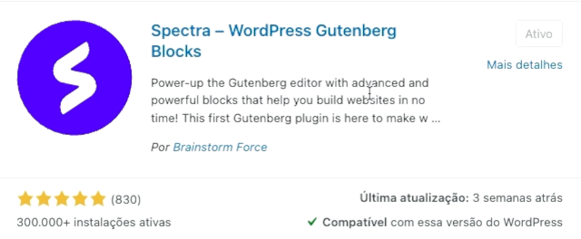
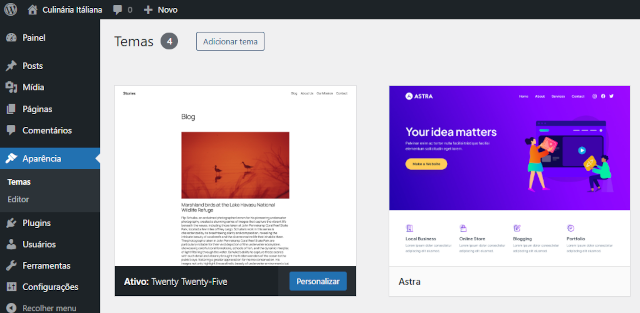
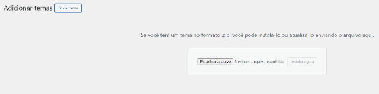
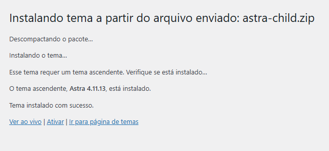
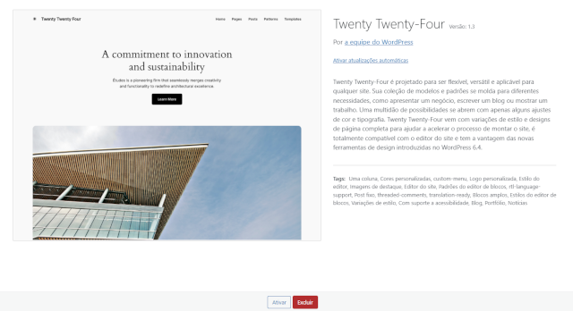
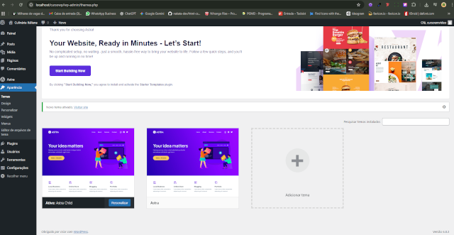
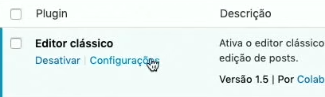
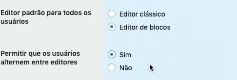

Plugin que mudou o nome:
Antes o nome desse plugin era: Utimate addons for Gutenberg, agora o plugin passou a ser chamado de Spectra - WodrPress Gutenberg Blocks.

Dica do Ramiro Lobo: Plugin e tema que não são usados, exclua pois mesmo estando inativado dentro de seu painel, o atualizador automático vai fazer a atualização desses plugins.
Temas
1º Para adicionar um tema, acesse em: Aparência > Temas
Instale o tema Astra
2º Não ative o tema Pai!!!Baixe o tema filho pelo link: Download
ou
Pesquise no Google: Astra Child Generator
Acesse o site oficial do Astra: https://wpastra.com/child-theme-generator/
3º Click em Generate para baixar
4º Depois que baixar, vá para Aparência e Adicionar Tema

5º Enviar Tema

Agora o arquivo do astra vai ser descompactado e instalado automaticamente.

6º Assim que for instalado, você pode Ativar o tema e passar para o próximo processo.

Agora o Tema Astra esta pronto...

Lista de Plugins
- Editor Classico (por:WodrPress Contributors)
- Microthemer (por:Themeover)
- Spectra - WodrPress Gutenberg Blocks (por: Brainstorm Force)
- Astra Widgets (por:Brainstorm Force)
- Companion Auto Update (por:Papin Schipper)
- EWWW Image Optimizer (por:Exactly WWW)
- Google Analytics for WordPress By MonsterInsights (por: Monster Insights)
- Importador do WordPress (por:WordPress.org)
- Rank Math SEO (por: Rank Math)
- Really Simple SSL (por: Rogier Lankhorst, Mark Wolters)
- UpdraftPlus: Backup/Restore (por: UpdraftPlus.com, David Anderson)
- WP mail SMTP (por: WPForms)
- WPForms Lite (por:WPForms)
- WPS Hide Login (por: WPServeur, NicolasKulka, Tabrisrp)
Caso apareça alguma mensagem como: "O Ultimate Addons for Gutenberg requer Editor de blocos.Você pode alterar as definições do seu Editor de Blocos here. O plugin NÃO ESTÁ funcionando no momento"

Click em Configurações do Editor Classico

Salvar Alterações